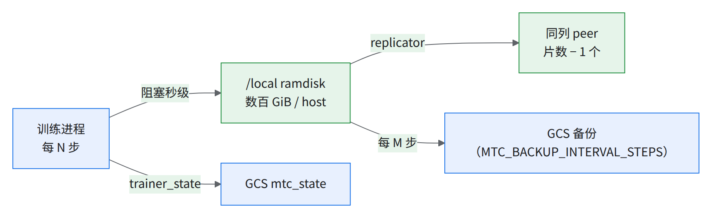
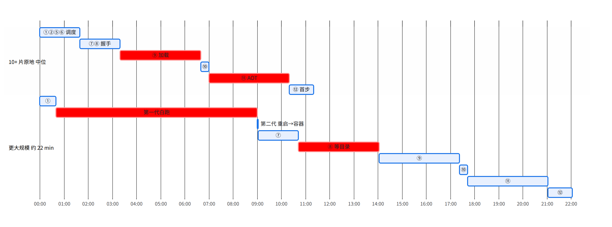

07a 故障恢复专题：演练、MTC、换片与时间账
结论先看
- 恢复一次多久：10+ 片原地重启约 11 min；换片顺利约 12 min，先挂住再驱逐 17–19 min，人工重建 13–31 min；更大规模仅 1 次约 22 min，其中约 5 min 是 MTC 注册失败后的白等（见经验教训第 62 条）。
- 时间花在哪：数据集加载、AOT 载入占一半多；读检查点只要约二十秒。更大规模多出的约 3 min 在「等恢复目录」。
- 出故障时做什么：§7a.0 速查；最要紧：见
ACTIVE_DEGRADED立刻删 JobSet 重提。- 建议目标：10+ 片原地重启 ≤ 15 min，优化目标 ≤ 8 min（[推断]，§7a.5）；更大规模只记录不设目标（07 §7.3 第 6 步）。
- 2 片演练只验流程，时间要在交付片数上测；丢步要在本地周期之上留余量，实测丢掉的步数超过一个本地周期（§7a.3）。
本章拆 10+ 片 / 更大规模生产作业的恢复实测和 2 片演练；开 MTC、失败策略、演练脚本、3 片演练、换 cube 修法在 07。
| 词 | 意思 |
|---|---|
| 原地重启 | JobSet BackoffLimitExceeded → RestartJobSet，切片不动 |
| 驱逐重建 | Kueue 驱逐（EvictedDueTo*）后重新准入，切片部分或全部重建 |
| 恢复时间 | 故障 → 恢复后第一个新 step 的日志时刻 |
| MTC | 多层检查点：每隔一定步数先存本机内存盘（本地层），再复制到别的机器和 GCS |
| replicator | 每台机器上替 MTC 复制、找回本地层的进程 |
| AOT | 提前编译好的程序，恢复时载入，不现编 |
ACTIVE_DEGRADED |
切片状态「能用但有毛病」；照样被准入，上去就挂；一天二十多次都不回 ACTIVE（05 §5.6） |
7a.0速查：出了故障做什么
| 看到 | 做什么 | 依据 |
|---|---|---|
| slice FAILED、Kueue 已驱逐 | 交给自动路径，别手删片（必全部重切） | §7a.4 |
驱逐后 kubectl get slices.accelerator.gke.io 或 05-triage-slice.sh <slice> 见 ACTIVE_DEGRADED |
立刻删 JobSet 重提（§7a.4 #1 干等 14 min） | §7a.4 |
重启后 5 min 还没 replicator.yaml，或容器起 10 min（更大规模 14 min）还没首步 |
当挂住，删 JobSet 重提（阈值见 §7a.1） | §7a.5 |
exec / 删 pod 后几秒，同片别的 host 报 SLICE_FAILURE_CHIP_DRIVER_ERROR |
演练连坐，按审计时刻去重，不送修 | §7a.2 |
| 同一个 cube 第二次出事 | 05-triage-slice.sh 取证 → 05-isolate-cube.sh（先 dry-run，没上过真集群）→ 删 JobSet 重提（删不掉的片用 05-delete-slice-chain.sh）→ 报修（07 §7.5） |
§7a.4 |
| 恢复完 | grep restoring step N from the local tier：N 应是最近一次本地存档的步数，丢掉的步数超过一个本地周期就保留 replicator 日志交给 Google（08 §8.5）；记 §7a.1 的 11 个时刻 |
§7a.3 |
7a.1交付前：演练梯子与配置
L1 过了才上 L2；L3 要先上 07 §7.4b 的修法，否则只会看到「本地层被拒」。
| 级 | 注入 | 怎么做 | 预期 |
|---|---|---|---|
| L0 | 无 | 08-daily-check.sh；按 07 §7.2 的 jsonpath 核失败策略；07-mtc-setup.sh 核 MTC |
maxRestarts ≥ 3 且不是 0；backoffLimit: 0；Kueue waitForPodsReady 生效；LOCAL_CHECKPOINT_PERIOD、MTC_DATA_PARALLELISM＝片数 |
| L1 | 2 片：杀进程 ×3、删 pod ×3、删片 ×1 | 07-jobset-mtc.yaml 起；07-fault-drill.sh --mode pod-kill 先 dry-run 再 --execute |
每次都 restoring step N from the local tier，N＝最近本地周期；无 conflicting rank；每 16 个 pod 同一个 4x4x4 分区 |
| L2 | 交付片数：杀进程、删 pod 各 ≥3 次，自然故障全记 | 重复 L1，时刻填进 §7a.5 的表 | 原地重启 ≤ 15 min；丢步不超过一个本地周期再加余量（§7a.3 的已知例外）。要在交付片数上实测，不拿本章的数代替 |
| L3 | 交付片数：换 cube | 07 §7.4b 验收演练表的 D2–D4 | 07 §7.4b 验收演练 |
每次演练记 11 个时刻（＝§7a.5 各段边界）：注入（inject.log、审计）→ BackoffLimitExceeded / Evicted* → RestartJobSetFailurePolicyAction / Admitted → Created pod → Docker Image Validation → replicator.yaml → Found a restore directory → restoring step N → Submitted transfer → Loading the compiled function / Loaded compiled function → 第一个 completed step。
- 每次注入都要事先约定窗口、通知相关值班；两次注入隔 ≥ 1 个本地周期、出新 step 再注（脚本不幂等）。
- 顺序：exec 杀进程（无脚本，手工）→ 删 pod → 删 VM → 模拟维护；删 Slice 只做一次，确认「全部重切」。
- 2 片演练要开 MTC、用 AOT 产物和生产镜像。
- 验先存再退（exit 3 + PodFailurePolicy）要杀整组或删 pod，杀单个进程不触发（07 §7.6）。
-
ramdisk 按 07 §7.1 第 5 步的 ≈ 本地检查点 × 2.2 起步；本书实测给到约 2.6 倍。
-
持久层不要全关，按使用方能丢多少步留一个低频的（07 §7.4b P0）。
-
最坏丢步（RPO）可按两个本地周期估算（是估算不是承诺），前提是换 cube 也能读本地层。这要靠 device id 配对补丁，上游 MaxText／Orbax 还没有，换 cube 那条路径也还没有实战日志，所以仍按持久层周期写。
-
容器里
ulimit -c 0（见经验教训第 42 条）；数据集初始化开BUILD_WORKERS=8；AOT 产物放本地盘或 Anywhere Cache 旁（06a）。 -
挂住判定
megascale_graph_hang_threshold要长过容器到首步：10+ 片 ≥ 10 min，更大规模 ≥ 14 min。 -
关缓存类开关在 worker-0-0 日志
Config param行核实，别只看 overlay（实测有过 overlay 被命令行盖住、没关成的情况）。
7a.2怎么模拟故障：每种手段走哪条路
- 杀进程、删 pod 只模拟软件崩。最费时的两类真实故障（先原地挂住再被驱逐、切到 DEGRADED 片）人为造不出。
- 交付最常见的坏 cube 只有 VM 手段能模拟，10+ 片没做过，恢复时间和丢步是空白。
| 手段 | 模拟的真实故障 | 走哪条路 | 坑 | 实测 |
|---|---|---|---|---|
kubectl exec 杀训练进程（日志 trainer Killed） |
进程崩、OOM | 原地重启 | 几秒内同片另一台报芯片错（8 次 7 次），libtpu 连坐 | 10+ 片 8 次，约 11–14 min |
kubectl delete pod（--mode pod-kill） |
pod 被驱逐、kubelet 重启 | 原地重启 | 日志是 SIGTERM 不是 Killed |
10+ 片 3 次，约 11–12 min |
gcloud compute instances stop（--mode vm-stop）/ delete / simulate-maintenance-event |
掉电 / 主机回收 / 计划维护 | 驱逐重建，换 cube | 未修经验教训第 24 条时本地层被拒；stop 要手动 start，delete 后 MIG 重建那台 |
3 片 5 次（07 §7.4）：顺利 3 次约 6 min；stop 的一次约 39 min 挂住，delete 有一次 66 min 未恢复 |
kubectl delete slice（--mode slice-delete） |
切片被收回 | 驱逐重建，全部重切（经验教训第 38 条） | — | 3 片 2 次（07 §7.4），约 30 / 38 min，都挂住 |
| 切片 FAILED（自然） | ICI / 硬件故障 | EvictedDueToAdmissionCheck，部分或全部重建 |
message 全空 | 10+ 片 3 次：约 12 / 17（先原地挂住）/ 31 min（DEGRADED） |
| 节点故障（自然；fast-kill SIGTERM 时触发过一次） | 节点 NotReady | EvictedDueToNodeFailures |
— | 10+ 片 1 次约 12 min；另一次约 31 min（排队约 11 min，§7a.5） |
7a.3MTC：本地层存一次十几秒、读一次约二十秒，丢步有一个已知例外

恢复先找本地 ramdisk，没有就由 replicator 从 peer 或 GCS 备份灌回。
| 实测生产值（10+ 片 / 更大规模） | |
|---|---|
| GCS 备份 | MTC_BACKUP_INTERVAL_STEPS：比本地层稀，取本地周期的整数倍 |
| 持久层 | ENABLE_CHECKPOINTING=false、MTC_PERSISTENT_CHECKPOINTING=false |
| 本地层容量 | 每 host 需要百余 GiB，ramdisk 数百 GiB |
本书实测用了两个 MaxText 补丁作绕过办法，上游 MaxText／Orbax 都未合入：
- device id 补丁（日志
hosts renumbered; restoring it by device id，十几次）：机器重新编号后按设备号（replicator 的 runtime index）找回自己那份，修经验教训第 24 条；二十多次恢复全走本地层。 - sharding-metadata-cache 补丁（
patch installed: Orbax _sharding serialization is memoized）：[推断] 存盘时少算一遍分片信息；2 片测不出差别。
存一次（阻塞取 Finished blocking save in N seconds … @ /local/N，阻塞 + 后台取 Finished save (blocking + background) in N seconds @ /local/N）
| 规模 | 次数 | 阻塞（中位） | 阻塞 + 后台 |
|---|---|---|---|
| 10+ 片 | 几十 | 秒级（个位数） | 十几秒 |
| 更大规模 | 十来 | 秒级（个位数） | 十几秒 |
| 持久层（对照） | 1 | 几分钟（数 TiB） | — |
- 持久层那行是一次 GCS save 的阻塞时间；同作业其余 GCS save 阻塞只有几秒。
- 本地层阻塞每次只有几秒，摊到本地周期里可以忽略。
- 更大规模阻塞不比 10+ 片长：[推断] 片数更多，每台要存的量不变。
读一次（一次原地重启逐行）
| 相对时刻（以找到恢复目录为 0） | 事件 | 段耗时 |
|---|---|---|
| 0 s | Found a restore directory |
— |
| +10 → +26 s | 建 emergency replicator 管理器 | 16 s |
| +28 → +202 s | Loading 8 shards：数据集状态 |
174 s |
| +203 s | restoring step <N> from the local tier |
— |
| 约 +212 s | 本地读完：数 TiB，数百 GiB/s | 约 9 s |
| +221 s | Submitted transfer：搬到 mesh |
约 10 s |
- 日志里的
Finished load in … @ /local/N（不到 1 s）只读了元数据，不是读本地层的耗时。 - 旧说法「MTC 恢复三分多钟」里约 3 min 是数据集加载。
丢步：原地重启十几次，一般从最近一次本地存档恢复，最多时丢掉的步数超过一个本地周期；驱逐重建 5 次也全读本地层，丢的步数都不到一个本地周期。
已知限制：本地层刚存完不久进程被杀，可能退回上一个本地存档，丢掉的步数超过一个本地周期。[推断] peer 复制还没完成，replicator 判最新那份不完整。估 RPO、定演练预期时在本地周期之上再留余量。
7a.4换掉坏片：自动和手动
- 不总是全换，也没证实「只换坏片」：下表 6 次里自动只换部分的只有 2 次（下表 #3、#5），#3 还换了 2 片好的；判据未核，按全换估。
10+ 片作业的每一次换片（单位 s，除注明外）
| # | 起因 | 新建几片 | ① → 驱逐 | ③ 下线或等配额 → 建片 | ④ 激活 | ⑤ 准入 + ⑥ 容器 | → 首步 | 合计 |
|---|---|---|---|---|---|---|---|---|
| 1 | 切片 FAILED | 全部 | — | — | 新片 → ACTIVE_DEGRADED |
— | 挂住，人工删 JobSet | 约 31 min |
| 2 | 人工重建 JobSet | 2（其余复用） | — | — | — | — | — | 约 12 min |
| 3 | 切片 FAILED | 3 | 2 | 16 | 87–117 | 4 + 3 | 约 10 min（⑦–⑫ 未拆） | 干净，约 12 min |
| 4 | jax-dist-fatal，原地挂住 → PodsReady 超时驱逐 | 8 | 34 重启 + 34 容器 + 254 | 61 配额 | 53–138 | 2 + 6 | 约 10 min | 约 19 min |
| 5 | EvictedDueToNodeFailures |
1 | 19 | 5 | 53 | 3 + 3 | 约 11 min | 约 12 min |
| 6 | jax-dist-fatal，原地挂住，期间一片 FAILED | 全部 | 41 + 35 + 158 | 17 | 51–141 | 2 + 5 | 约 10 min | 约 17 min |
- #1 逐段：FAILED → 2 s 驱逐 → 约 30 s 新建 → 新片 ACTIVATING 后进
ACTIVE_DEGRADED→ 准入、容器起来只打 28 行，停在 replicator 之前 → 干等约 14 min 后人工删 JobSet → 删后约 13 min 出首步。教训：见ACTIVE_DEGRADED立刻删 JobSet 重提（§7a.0）。 - [推断] PodsReady 超时：原地挂住约 5 min 被驱逐，像
recoveryTimeout；另一次准入后约 10 min 驱逐，像timeout（07 §7.2）。 - [推断] 原地挂住多半和
ACTIVE_DEGRADED片有关：同期有ACTIVE_DEGRADED片报DEADLINE_EXCEEDED。 - 复用：新建 slice 都带
kueue.gke.io/tpu-reusable-slice标签；更大规模首次准入也有片是复用的，不是全部新建。[推断] 换几片看哪些能复用，不看坏了几片。
人工删 JobSet 重建的三次
| # | 删 → 重提 | 重提 → 准入 | 准入 → 容器 | 容器 → 首步 | 删 → 首步 |
|---|---|---|---|---|---|
| 1 | 约 40 s | 约 100 s | 约 2 s | 约 10 min | 约 13 min |
| 2 | 约 50 s | 约 200 s | 约 9 s | 约 11 min | 约 15 min |
| 3 | 约 50 s | 约 100 s | 约 5 s | 第一代 barrier 失败，第二代约 22 min 才出 step | 约 25 min |
7a.5时间账：故障到第一步
10+ 片约 11 min 里 K8s 调度（①②⑤）只占约 90 s，要缩短先砍 ⑨ 和 ⑪。
分段总表（中位取整，单位 s；驱逐、人工重建见 §7a.4）
| 段 | 10+ 片原地重启（十几次） |
|---|---|
| ① 故障 → 发现 | 约 50（BackoffLimitExceeded） |
| ② JobSet 重启 | 约 2 |
| ⑤ 重启 → pod 建好 | 约 40 |
| ⑥ pod → 容器第一行 | 约 4 |
| ⑦ jax 分布式初始化 + MTC 握手 | 约 100 |
| ⑧ 等恢复目录 | 约 6 |
| ⑨ 管理器 + 数据集加载 | 约 200 |
| ⑩ 读本地层 + 搬到 mesh | 约 20 |
| ⑪ AOT 载入（另有 5–9 s 准备） | 约 200 |
| ⑫ 首步 | 约 60 |
| 合计 | 约 11 min（10–14 min） |
| 其中容器 → 首步 | 约 10 min |

- ① 按起因：exec 50–56 s、删 pod 61–63 s、Traceback 19–35 s。⑧ 有两次 71 / 58 s，其余 4–9 s，[推断] replicator 在等某个 peer；⑫ 有一次 221 s，原因未核。
- 更大规模（1 次）：第一代故障后 41 s 重启，容器起 147 s 后才有 replicator.yaml，随即失败，第二次重启。失败原因：rank 0 的 coordinator 注册碰上 apiserver 瞬断、不重试，其余节点等满 300 s 才报错（见经验教训第 62 条）。第二代容器 → 首步约 13 min，多在 ⑦ ⑧（一直等到
Found a restore directory），[推断] 要等所有机器全部报到。 - 3 片演练（07 §7.4）顺利时快一半，因为没 AOT；那里的挂住根因经验教训第 42 条在 10+ 片/更大规模实测里没再出现，是否彻底消失未核。
排队吃掉约 11 min 的一次（节点故障驱逐）：等配额 十余分钟 → 新建 8 片到准入约 2 min → 容器约 2 min → 首步约 11 min，合计约 31 min，丢的步数不到一个本地周期。
8 min 目标怎么来的 [推断：约 11 min 减预期节省]：
-
⑨ 数据集加载：按 2 片
BUILD_WORKERS=8的比例（125 → 43 s，约 0.34 倍）从约 200 s 缩到约 70 s，省约 2 min。10+ 片未实测。 -
⑪ AOT 载入：再压约 1 min，即约 3 min → 约 2 min；怎么压（本地盘、Anywhere Cache）未实测。
-
core dump：10+ 片 ① 没被拖慢；关它是守住 ①（2 片开着时慢 4–6 min）。
-
约 11 min 减去约 2 min、约 1 min ≈ 8 min；缺一项就到不了。
7a.62 片演练能说明什么
-
2 片总时间和 10+ 片接近是巧合，各段完全不同；但能抓到问题：core dump 让重启慢 4–6 min，
BUILD_WORKERS=8让数据初始化快 3 倍。 -
SIGTERM 时 MaxText 本身 exit 0，JobSet 判
Completed；先存再退（exit 3）只在杀整组或删 pod 时生效（07 §7.6、经验教训第 44 条）。 -
能从 2 片外推的：发现 → 重启（前提是关 core dump）、重启 → 容器、数据集初始化。jax 初始化与等恢复目录随台数涨（2 片约 1 min，10+ 片一分半左右，更大规模约 5 min）；读检查点、编译、首步、丢步，以及挂住再驱逐、DEGRADED、切片复用，都要在交付片数上测。